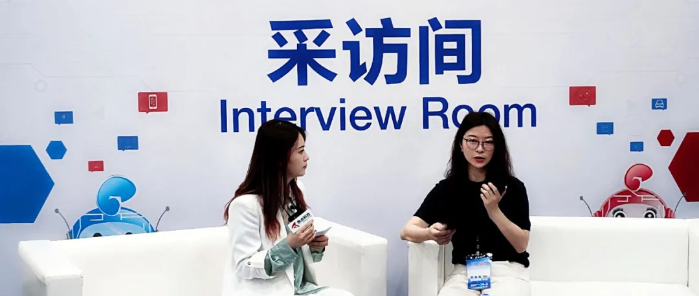

展会 | 万里数据库受邀CITE专访 解析信创产业新动向
4月10日，万里数据库业务专家接受2021CITE官方媒体热点科技主题专访，畅谈万里数据库在信创国产化方面的成果表现及未来规划，希望发挥自身产品特点，深入金融、运营商、能源、工业互联网、政府等行业应用，做好信创领域的一颗螺丝钉。

★
PIC
万里数据库业务专家受邀专访
以下为专访内容：
国家现在对信创产业高度重视，国产软硬件迎来了一个利好的政策风口，万里数据库在国产化这块都做了哪些工作？
万里数据库业务专家：
技术和生态方面：万里2004年开始作为MySQL中国研发中心，参与分布式数据库的研发，掌握底层核心代码，从2010年开始全面转向自主研发，在技术方面有二十余年积累。目前和名录里的国产芯片、操作系统进行了全面适配，2019年加入工信部信创工委会，最新一次自主代码率测试为81.09%。未来，我们会在信创生态持续发力，积极与各行业更多业务应用相结合。
产品和解决方案方面：公司目前主要的产品包括安全数据库、目录服务系统和云数据库服务平台。万里积极和金融、能源领域合作伙伴共创，在金融领域，公司产品稳定支撑了云缴费业务，与光大银行基于万里数据库源码联合研发了EverDB数据库并建立联合实验室，与国家电网联合研发SGRDB项目，与联通沃音乐成立海纳数据智能联合研发实验室等等，展开了一系列产品联研和解决方案的合作。
业务拓展方面：近几年，我们先后与国家电网、光大银行、中国移动等金融、运营商、能源领域头部企业取得了项目合作，公司的产品和解决方案应用在这些领域的核心业务系统中，累计部署超过500个业务场景。
CITC 2021记者：
万里数据库近期在信创这块有哪些突出表现？未来有什么计划？
万里数据库业务专家：
万里数据库作为国产基础软件，在国家信创产业政策的推动下，有义务也有责任为信创产业做出自身贡献，推动基础软件更好发展。
我们在去年7月成功目标中移动联合创新OLTP分布式数据库项目，在分布式标包中，中标公司有两家，我们占据60%的中标份额，被安信证券誉为“国产数据库最大黑马”。并且在上个月，万里数据库成功入围央采名录，万里安全数据库入围第一包事务型数据库管理系统。
在信创产业里，未来我们还会在公司聚焦的金融、运营商、能源、工业互联网等多个行业领域持续发力。
CITC 2021记者：
我们知道，在运营商领域，万里数据库表现不俗，可以分享一下取得的一些亮眼成绩吗？
万里数据库业务专家：
万里数据库在运营商领域的表现，一是前面提到的，与中国移动、中国联通等头部客户达成了合作，联合做一些项目和建立实验室。此外，我们支撑了各省移动公司的经分业务，包括北京移动、河南移动、四川移动、山东移动等省市分公司。
另外，在运营商总部和各省的智慧中台项目中，万里配合实现了首个国产数据库替代，在业内具有标杆和引领作用。
CITC 2021记者：
万里作为国产数据库的其中一家厂商，企业的竞争优势和差异化体现在哪些方面呢？
万里数据库业务专家：
首先，我们从2010年开始独立自研分布式事务型数据库，比较具有前瞻性，当时国内还没有一款国产分布式数据库，还是一片蓝海市场。发展到现在，GreatDB成为一款原生分布式数据库，针对国内企业级市场的需求，改进了事务模型，从吞吐和延时两个维度改进了性能。从用户角度出发，对2代原生分布式数据库进行了增强，这也是公司联合创始人林韶宾林总定义的新一代分布式数据库。
万里数据库未来的目标，是希望深入行业学习，融入行业应用，为行业用户和应用开发商提供持续、专业、优质的服务，在基础软件领域做好一颗螺丝钉，助推信创更高质量发展。
推荐阅读1.展会 | 数据可信 创变未来——万里数据库亮相2021CITE首届信创生态展区
2. 展会 | 叮！万里数据库向您发出一封2021中国电子信息博览会邀请函~
3. 万里数据库荣获最佳信创企业奖


扫码二维码
关注公众号